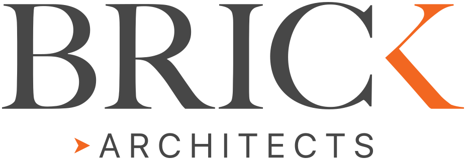
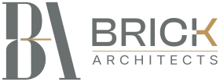

CASE STUDY – BRAND IDENTITY
Brick
Architects
A brand identity for Brick Architects, combining a BA monogram, customised wordmark and a restrained colour palette. The system extends across logo lockups, stationery and digital application studies.
Brand identity by Proof Creative.
- CLIENT
- Brick Architects
- ROLE
- Brand Identity
- DELIVERABLES
- Monogram, wordmark, logo system & application studies
- SECTOR
- Architecture
Identity by Proof Creative. Application images are mock-ups from the supplied brand presentation.
The Challenge
The design task was to bring the semi-serif BA monogram together with a stronger, customised wordmark. The proportions, spacing and logo variations needed to work across stationery, signage and digital formats.
The Approach
The BA monogram was paired with a customised Clash Display Bold wordmark and an open-spaced ARCHITECTS descriptor. Horizontal, vertical and compact versions were developed for different applications.
Charcoal, black and warm white form the foundation of the palette. Gold provides a restrained accent. Stationery, digital and apparel studies show how the elements work together.
The Result
A resolved identity system built around the BA monogram, customised wordmark and defined colour palette. The presentation brings the logo suite together with business-card, letterhead, digital and apparel application studies.
Identity details
The Brick
Identity System
Horizontal and vertical lockups, a compact wordmark and the standalone monogram provide options for different scales and formats.


Drag or tap the image to compare. Use left and right keys when the slider is focused.
Original identities, shown at a consistent scale.
#6A706F
#1D1D1B
#F4F3EF
#B99758
Application studies
The presentation explores the identity across business cards, letterhead, digital layouts and apparel. These are application mock-ups, not evidence of manufactured items or a completed website build.
Client perspectives
In their own words.
From the client.
He recently completed my new branding and logo design, and I couldn't be happier with the results.
Read the full review
Five stars for Carl.
He recently completed my new branding and logo design, and I couldn't be happier with the results. His genuine enthusiasm for the project was evident from start to finish, and he delivered a fast turnaround time without ever sacrificing on quality. Throughout the entire process, Carl maintained excellent communication and kept me updated every step of the way. If you need a talented professional graphic designer, I highly recommend Proof Creative.

Reproduced with permission. The review retains the client's own words.

Your next project
Creative, built to last.
Something
in mind?
A new brand. A new pack.
An idea that needs to become real.